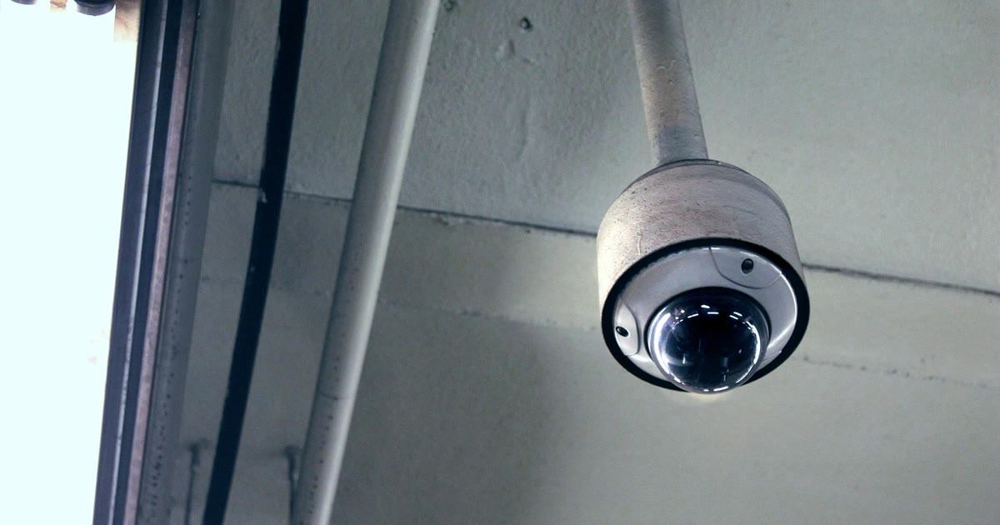

Uma câmera para monitorar pet é uma câmera Wi-Fi doméstica adaptada (ou usada) para acompanhar cães e gatos enquanto o tutor está fora de casa, geralmente com recursos extras como áudio bidirecional, dispensador de petisco e, em alguns modelos, laser interativo. A pergunta certa antes de comprar não é "qual a melhor câmera", mas "o que eu realmente preciso ver e fazer à distância".
Este guia cobre como escolher, os principais recursos do mercado e quando vale (ou não) investir em modelos mais caros.
Key Takeaways
- Modelos como TP-Link Tapo C200 lideram em custo-benefício para monitoramento básico, com Full HD 1080p, rotação por app e áudio bidirecional.
- Modelos mais completos, como a Newpet Câmera Pet 2K, agregam dispensador de petiscos e laser interativo controlados pelo próprio aplicativo.
- A câmera continua gravando no cartão SD mesmo sem internet, mas visualização ao vivo e notificações dependem de conexão.
- Câmeras Wi-Fi residenciais operam majoritariamente na banda 2,4 GHz — um erro comum é tentar conectar na rede 5 GHz do roteador.
- Câmera não resolve ansiedade de separação sozinha: ela ajuda a monitorar e a acalmar via áudio, mas a causa de fundo pode exigir enriquecimento ambiental ou acompanhamento profissional.
Além de simplesmente "ver o pet", o recurso mais citado por quem já usa é entender o comportamento do animal quando está sozinho — muitos tutores só descobrem sinais de ansiedade, tédio ou desconforto ao rever as imagens (achados compilados por Cães e Gatos, retrieved 2026-08-22). O áudio bidirecional permite falar com o pet e, em alguns casos, acalmá-lo remotamente.
veja como a câmera ajuda (e não resolve sozinha) a ansiedade de separação
| Recurso | Para que serve | Vale priorizar quando |
|---|---|---|
| Resolução (1080p/2K) | Nitidez da imagem | Ambientes grandes ou necessidade de zoom |
| Visão noturna | Monitorar em ambiente escuro | Pet ativo à noite ou cômodo pouco iluminado |
| Áudio bidirecional | Falar com o pet remotamente | Cão/gato com ansiedade de separação |
| Dispensador de petisco | Recompensar o pet pelo app | Reforço positivo à distância |
| Gravação em cartão SD | Registro local, sem depender de nuvem | Quedas de internet frequentes |
veja como funciona o recurso de dispensador de petisco
A TP-Link Tapo C200 é frequentemente citada como a escolha mais popular por equilibrar preço, recursos e confiabilidade, com rotação horizontal de 360° e vertical de 114° controlada pelo app, resolução Full HD e visão noturna de até 9 metros (comparativos de mercado consultados por mybest, retrieved 2026-08-22). Já modelos como a Newpet Câmera Pet 2K agregam dispensador de petiscos e laser interativo ao pacote básico de monitoramento.
veja o comparativo dos modelos mais vendidos
São soluções para problemas diferentes: a câmera monitora o pet dentro de casa; a coleira GPS localiza o pet quando ele está fora do alcance de visão, inclusive fora de casa. Não é incomum tutores usarem as duas em conjunto — câmera para o que acontece dentro, coleira GPS para quando o pet sai.
veja o comparativo completo entre os dois gadgets
A câmera continua gravando localmente no cartão SD mesmo durante uma queda de internet, desde que permaneça com energia — mas a visualização ao vivo, as notificações push e o acesso à nuvem dependem de conexão (Minha Casa Tech, retrieved 2026-08-22).
entenda em detalhe o que funciona e o que não funciona offline
O erro mais frequente é tentar conectar a câmera à rede Wi-Fi de 5 GHz do roteador — a maioria das câmeras residenciais opera exclusivamente em 2,4 GHz (relatos de suporte técnico compilados por diversos fabricantes, retrieved 2026-08-22).
veja o passo a passo de configuração sem erros
veja outros erros comuns além da conexão Wi-Fi
A câmera para monitorar pet resolve um problema real — saber o que o animal faz sozinho em casa — mas o modelo certo depende do que você mais precisa: apenas ver, falar, recompensar com petisco, ou gravar mesmo sem internet estável. Definir isso antes de comprar evita pagar por recursos que você não vai usar.
veja as perguntas frequentes sobre câmera para monitorar pet
Escrito pela Equipe Smart Pet Gadgets, redação especializada em comparativos de produtos pet no mercado brasileiro. Veja nossa política editorial e como verificamos as fontes citadas neste artigo.
🐾 Confira o preço e a disponibilidade atual no Mercado Livre.
Ver no Mercado Livre →Link de afiliado: podemos receber uma comissão por compras feitas através deste link, sem custo adicional para você.
Depende do que você quer fazer. A câmera continua gravando no cartão SD mesmo sem internet, desde que tenha energia. Mas visualização ao vivo pelo app, notificações e acesso à nuvem exigem conexão.
Não sozinha. Ela ajuda a identificar e monitorar sinais de ansiedade, e o áudio bidirecional pode acalmar o pet no momento, mas o tratamento da causa costuma envolver enriquecimento ambiental, gasto de energia antes de sair e, em casos mais sérios, acompanhamento profissional.
Full HD (1080p) já entrega boa nitidez para acompanhar o pet em tempo real. Câmeras 2K ou superiores ajudam mais em ambientes grandes ou quando você quer dar zoom sem perder muito detalhe.
Nildo Alves — curadoria de produtos pet no Smart Pet Gadgets. Testa e pesquisa produtos para cães e gatos, cruzando especificações de fabricante com boas práticas veterinárias e dados de mercado.
Sobre o Smart Pet Gadgets · Contato · Política editorial e de afiliados